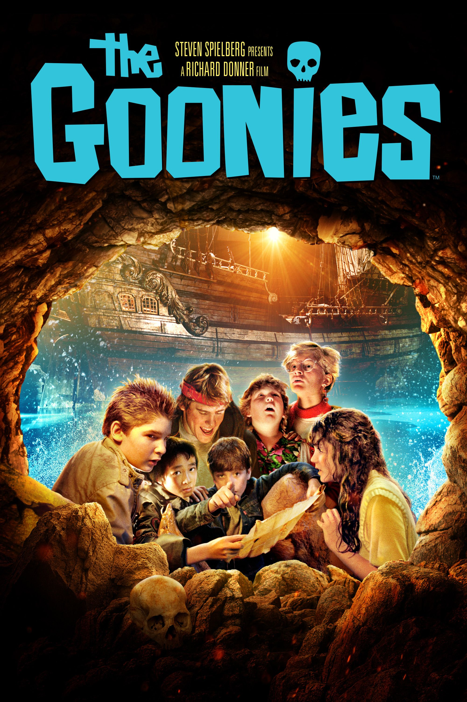

It’s 2:57 in the morning. Maybe you’re hanging with friends or just
having a night to yourself. Either way, you’re in the mood to
watch a movie. You open up your perferred streaming service but are
confronted with countless options. You scroll through the
numerous aisles and begin to break a sweat. You see movies you
like, but none that you love. Well, not to worry, this list will
provide movies that account for every mood you might be feeling
at 3 AM. Keep scrolling to see the ultimate lineup.
The following movies will receive 2 ratings: enjoyment and
watchablility. Enjoyment is pretty much self-explanatory as it is
based on one’s sheer entertainment while viewing. Watchability
is based on the movie’s ability to be watched at such an ungodly
hour.
10. Step Brothers
Step Brothers is a great option for a midnight movie. It's funny
enough to keep you engaged throughout and the sheer absurdness of
the characters will keep you on the edge of your seat. A great
option if you're looking for a lighthearted, feel-good comedy.
9. The Matrix
The Matrix is perfect for people looking for a movie that will
mess with your brain and inspire some deep 3 AM thoughts. It's
action packed with complex characters and an even more detailed
plot. The ideal sci-fi film.
8. Madagascar Movies
The Madagascar Movies are never a bad option when looking for
a funny, enjoyable animation. Although suggested for kids, there
is no age limit on these masterpieces as even the most serious
of adults will be rolling on the floor after watching.
7. The Notebook
The Notebook is the classic rom-com. This movie is perfect
if you're in you're feels and need a good sappy love story.
The characters are easily lovable and their story is even more adorable.
6. Texas Chainsaw Massacre
Texas Chainsaw Massacre is a great horror movie as it
has a Nightmare on Elm Street feel while incorporating modern movie
technology. Great for those nights when you're looking to feel some
exhiliration and get that heart pounding.
5. The Perks of Being a Wallflower
The Perks of Being a Wallflower is a mesmerizing coming-of-age
film with a beautiful display of the struggles in a young, relatable
teen's life. Although considered a comfort movie by many, it is
an emotional rollercoaster that touches on difficult topics. Very
worth-while.
4. Mean Girls
One of the most infamous movies of all time, Mean Girls had to
have a spot on this list. It's incredibly iconic and is effortlessly
funny. This movie is perfect when looking for the ultimate chic-flick.
3. The Goonies
This list would not be complete without at least one 80s movie.
The Goonies is an easily lovable film with amusing characters. The
movie has a fun plot too with plenty of mystery and adventure.

2. Thor Ragnarok
Thor Ragnarok is one of the best Marvel movies of all time.
With an entertaining and unique plot, this movie is perfect when
looking for a fun superhero movie. It has a great balance of
funniness and quality film making.
1. 21 Jump Street
21 Jump Street is handsdown one of the funniest movies ever
created. Channing Tatum and Jonah Hill have incredible chemistry
and work together to create a true masterpiece. Perfect for those
nights where you want a good laugh.